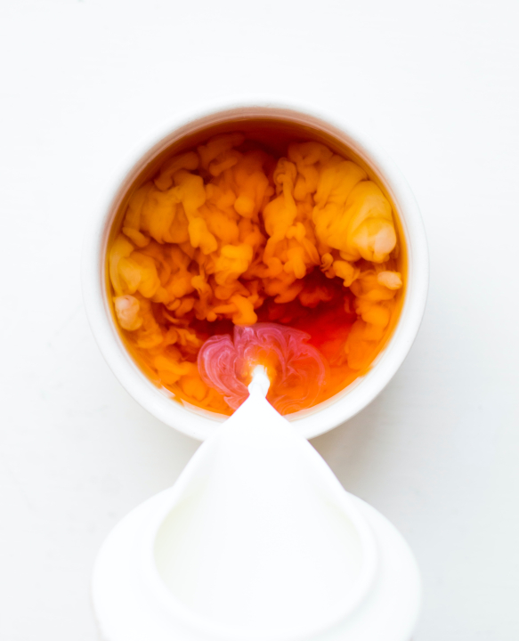

Milk Tea

Description
Tea drinkers can liven up tea time by adding milk to their tea after brewing. Adding milk is a great way to play with new flavours.
Ingredients
- 1 cup water
- 1 Black tea teabag from a brand of your choice
- 1/4 cup milk of your choice
- 3 tsp honey or simple syrup
Steps
- Bring water to a boil and pour into cup with teabag in it.
- Steep the teabag in the hot water for 4-6 minutes. The longer the tea is left to steep, the stronger the tea will be.
- Remove teabag.
- Stir in milk and honey/simple sugar.
Credits
Other Tea Recipes